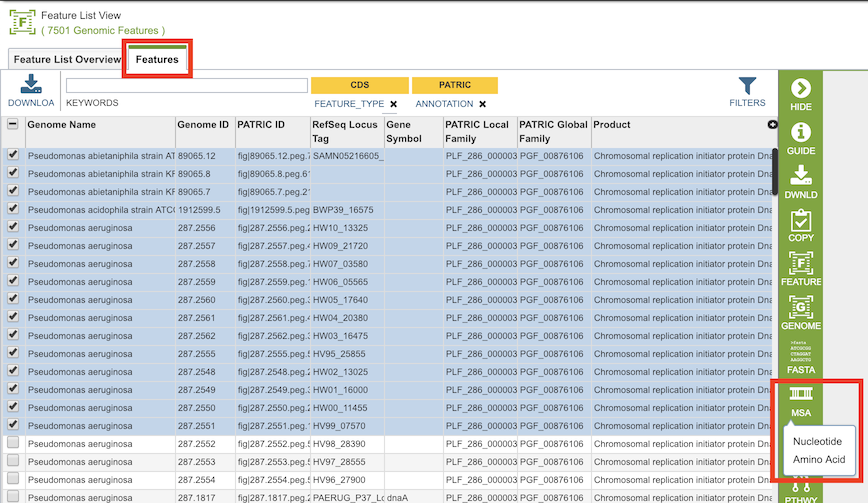
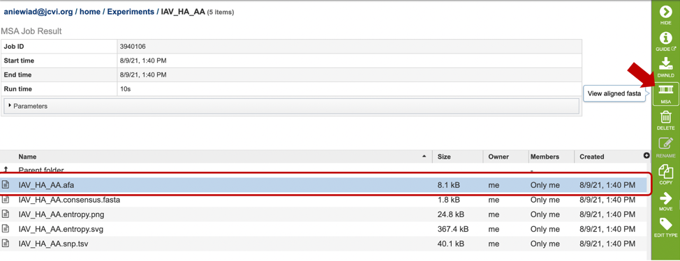
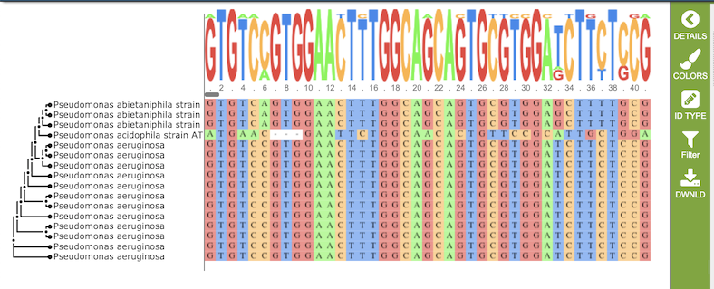
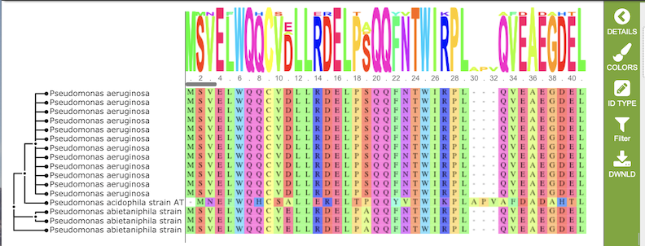
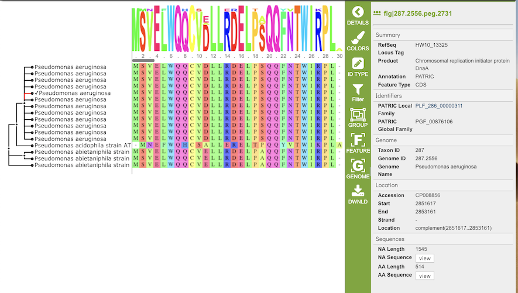
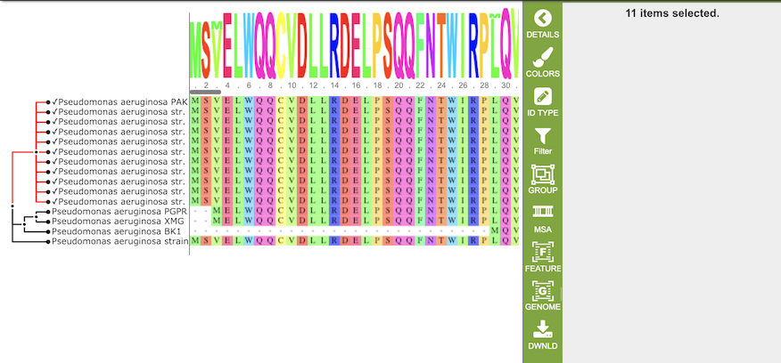

Mulitiple Sequence Alignment Viewer¶
Overview¶
The Multiple Sequence Alignment (MSA) Viewer provides an interactive visualization of a nucleic acid or amino acid multiple sequence alignment with a linked interactive tree viewer.
See also¶
Accessing the MSA Viewer¶
The MSA Viewer can be accessed in two different ways:
By selecting a set of features in the Features Tab or any other table that contains features/genes (nucleotide sequences) or proteins (amino acid sequences), then clicking the MSA button in the vertical green Action Bar to the right of the table, as shown below. Results presented in the MSA Viewer are generated using FastTree[1], Gblocks[2], and Muscle[3].

By selecting can be used after completing an alignment job in the MSA and Sequence Nucleotide Polymorphism (SNP)/Variation Service. Alternatively, if you already have an aligned file, you can also view the alignment by uploading it to this service. For more information, see MSA and Variation tutorial linked above. Note: You must be logged into BV-BRC to use this service.

Results, whether nucleotide or amino acid, will be shown in the MSA Viewer, as shown in the figures below:
Nucleotide MSA

Amino Acid MSA

Features and Functionality¶
The visualization has 3 main components:
Gene tree on the left-hand side that is constructed based on the alignment
Multiple sequence alignment in the main body of the visualization.
Sequence logo across the top wherein the hight of the letter corresponds to the amount of conservation of the corresponding nucleotide or amino acid
Gene tree¶
The gene tree on the left-hand side is generated using . Clicking on a single sequence item in the tree selects that item, as indicated with a small check mark and a red line in the tree branch. A set of corresponding actions becomes available in the vertical green Action Bar on the right side of the visualization (explained in detail in Action buttons section below). Also, additional information and metadata about the selected item will be displayed in the information panel on the far right. See figure below.

Clicking on a node in the treee selects all items in that branch, as indicated by check marks and red lines in that branch of the tree.

Multiple Sequence Alignment and Sequence Logo¶
The multiple sequence alignment shows color-coded alginment of the letters in the sequnces in columns. The color scheme can be changed using the Colors button in the vertical green Action Bar on right side of the aignment. The sequence logo shows the amount of consservation of the letters in that column, indicated by the height of the corresponding letter. A scrollbar between the seqeunce logo and alignment allows horizontal scrolling across the entire alignment.
References¶
Price, M. N., Dehal, P. S., & Arkin, A. P. (2009). FastTree: computing large minimum evolution trees with profiles instead of a distance matrix. Molecular biology and evolution, 26(7), 1641-1650.
Castresana, J. (2002). Gblocks, v. 0.91 b. Online version available at: http://molevol.cmima.csic.es/castresana/Gblocks_server.html.
Edgar, R.C. (2004) MUSCLE: multiple sequence alignment with high accuracy and high throughput. Nucleic Acids Res. 32(5):1792-1797.
Waterhouse, A.M., Procter, J.B., Martin, D.M.A, Clamp, M. and Barton, G. J. (2009). Jalview Version 2 - a multiple sequence alignment editor and analysis workbench. Bioinformatics25 (9) 1189-1191. doi: 10.1093/bioinformatics/btp033